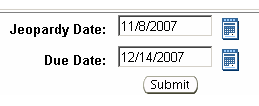

Previous Topic
Next Topic
| Workflow |
Previous Topic |
Next Topic |
The Change Due Date page allows you to alter the current
workflow dates after the workflow has begun. Two date pick lists will
appear. The first pick list, Jeopardy Date,
allows you to enter a new date for when the workflow goes into jeopardy
status. The second pick list, Due Date, allows you to enter a new date for when
the workflow is due. Keep in mind this will have no affect on any regulatory
clock or the systems functions to determine if, for example, a permit was
issued in the mandatory 180-day time period.
In
either case you can enter a date that is in the past or the future. Then click  to
finalize the change.
to
finalize the change.

Copyright © 1996, 2004, Oracle. All rights reserved.